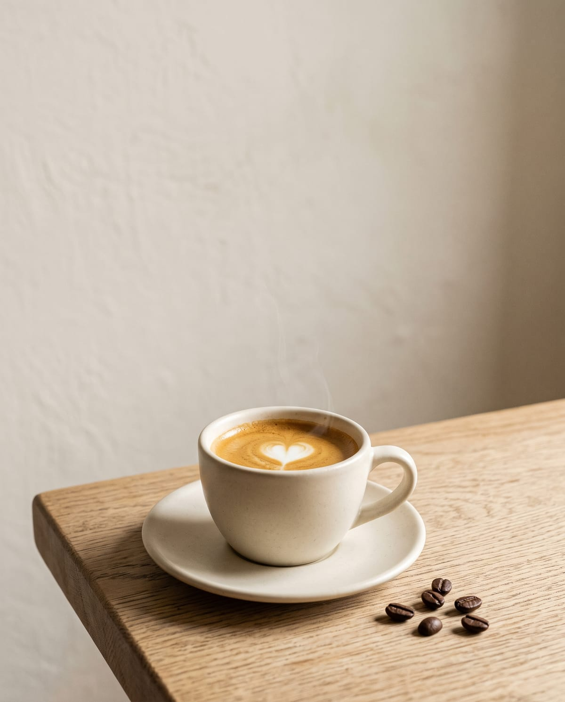
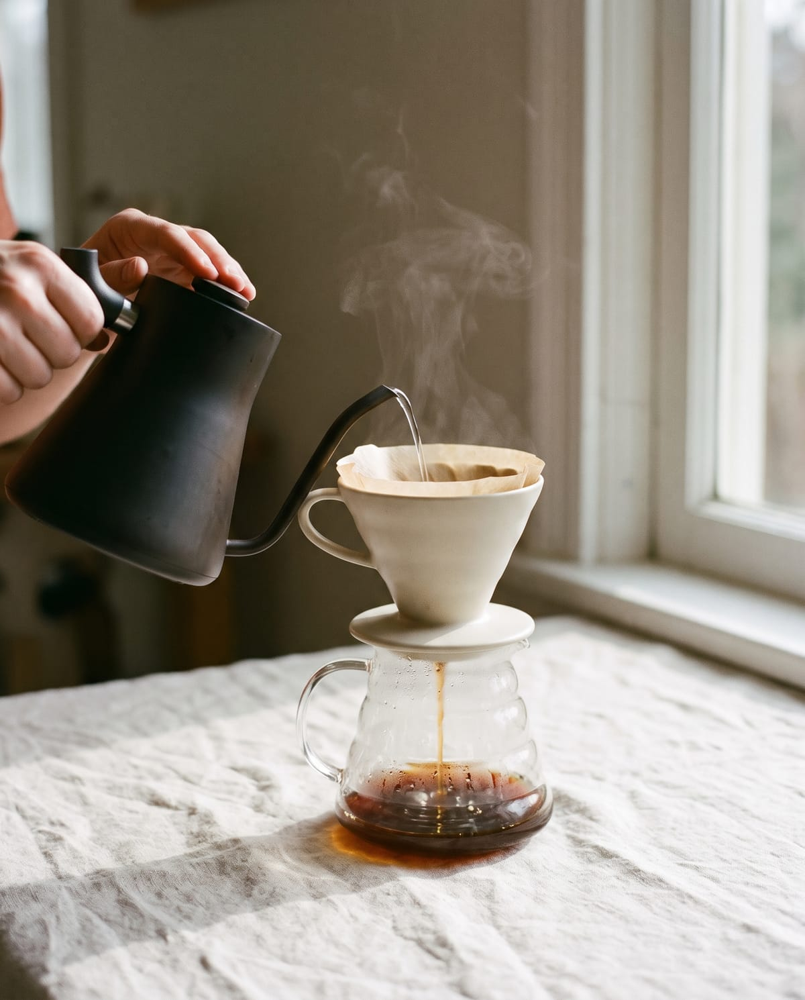
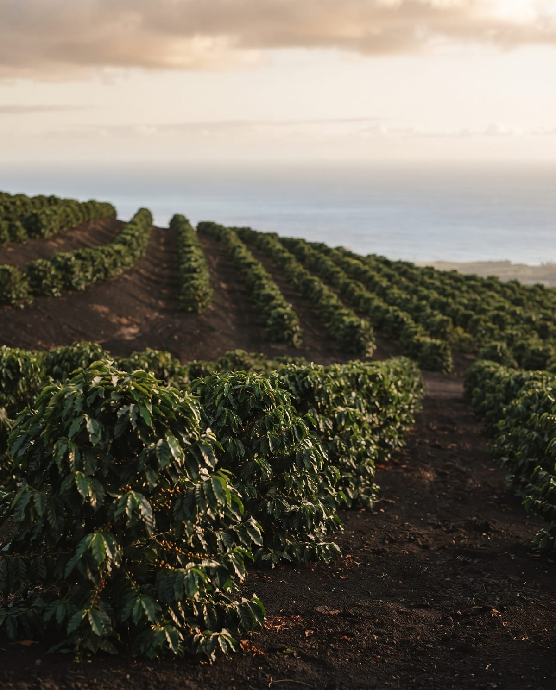
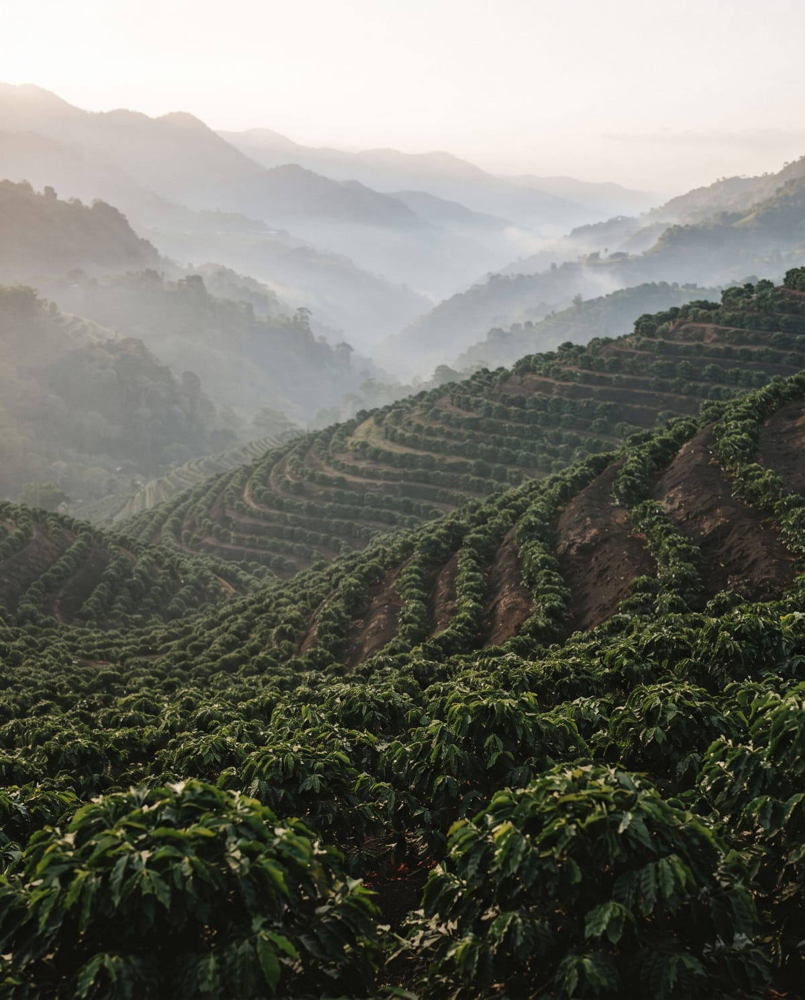
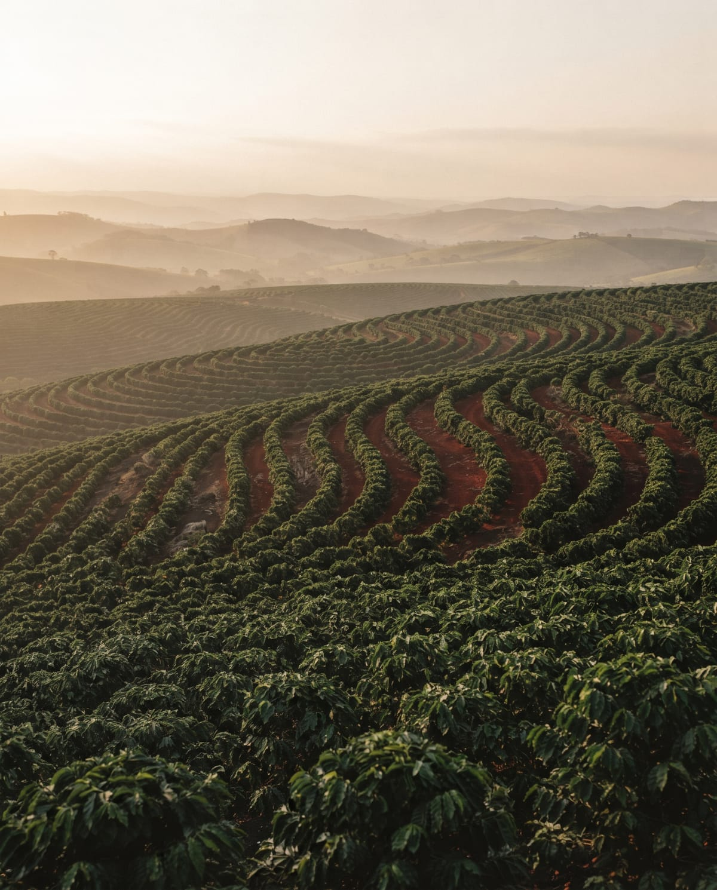
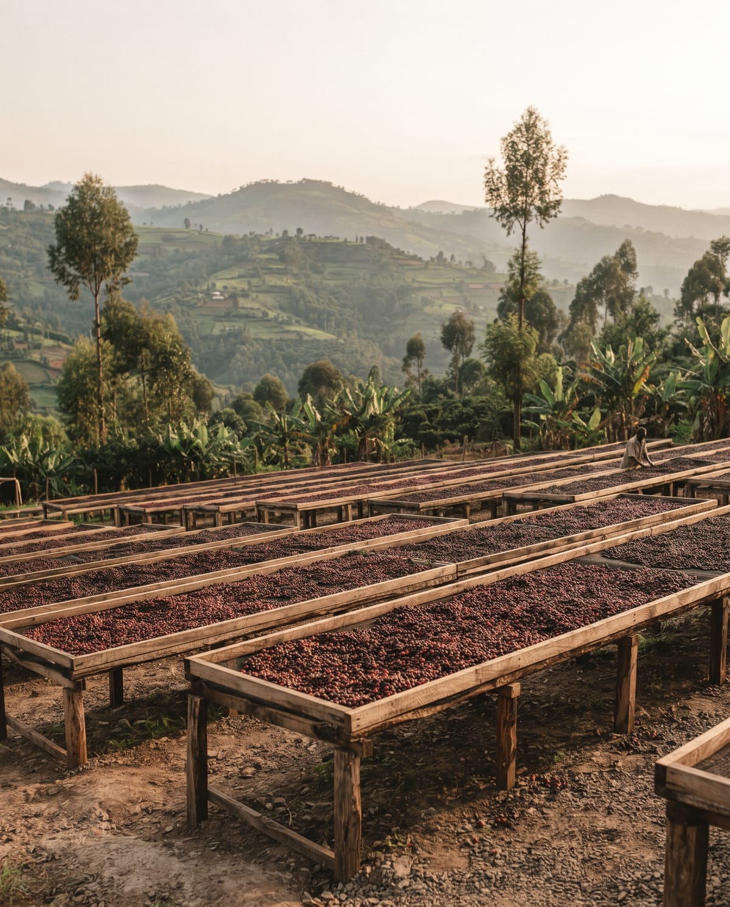
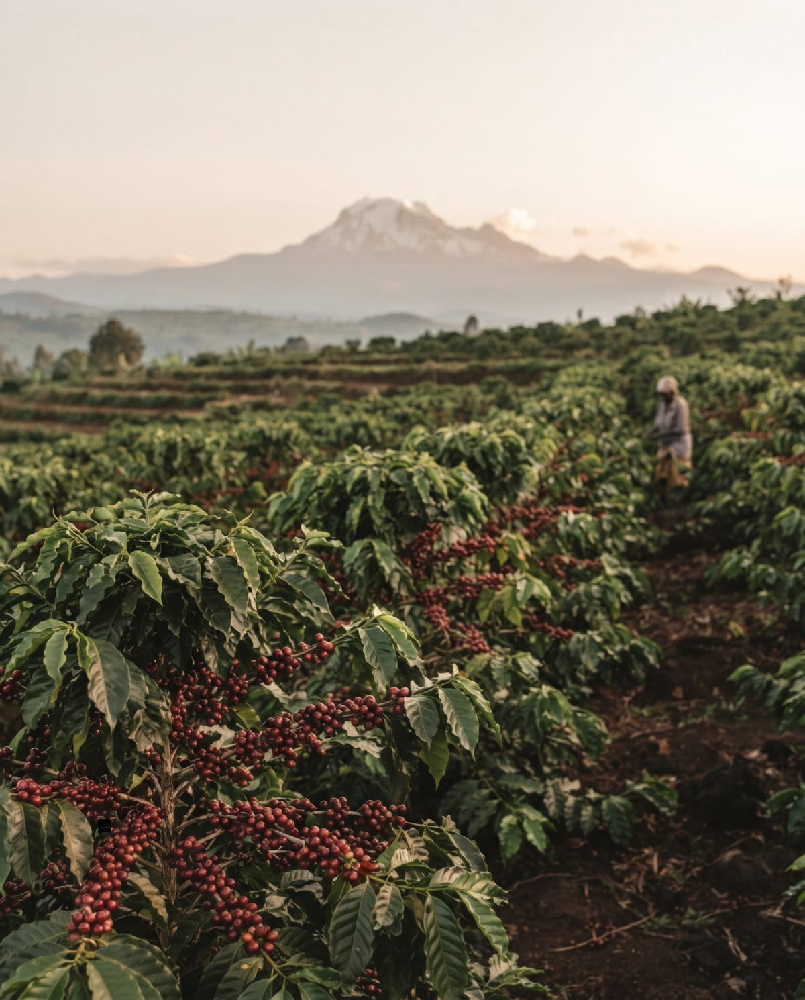
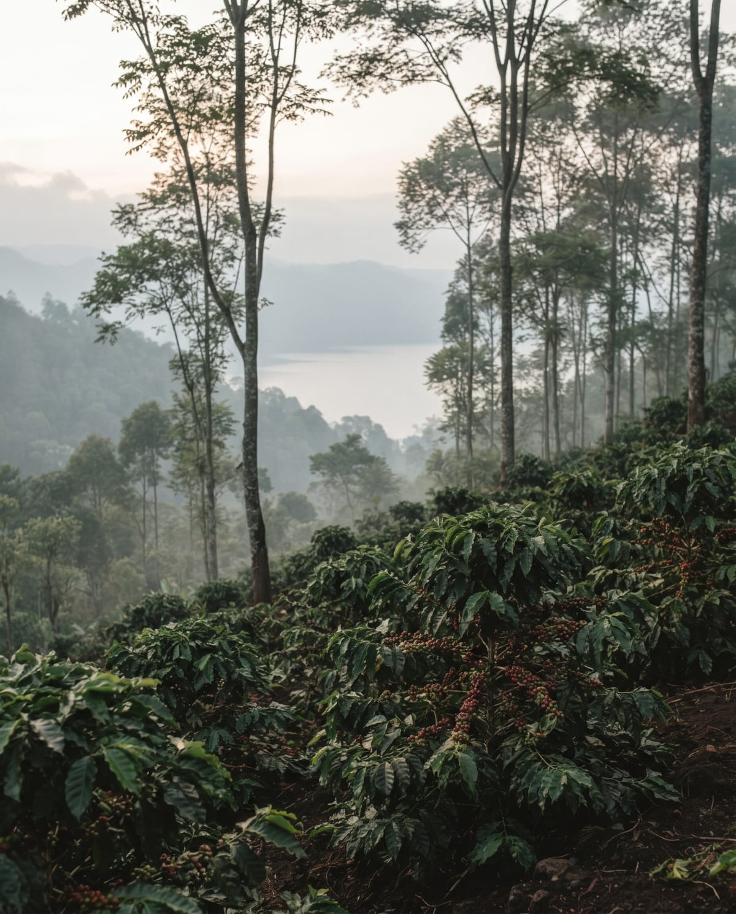
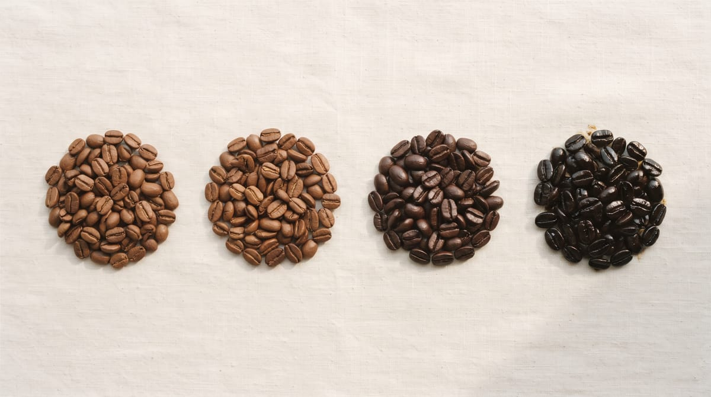
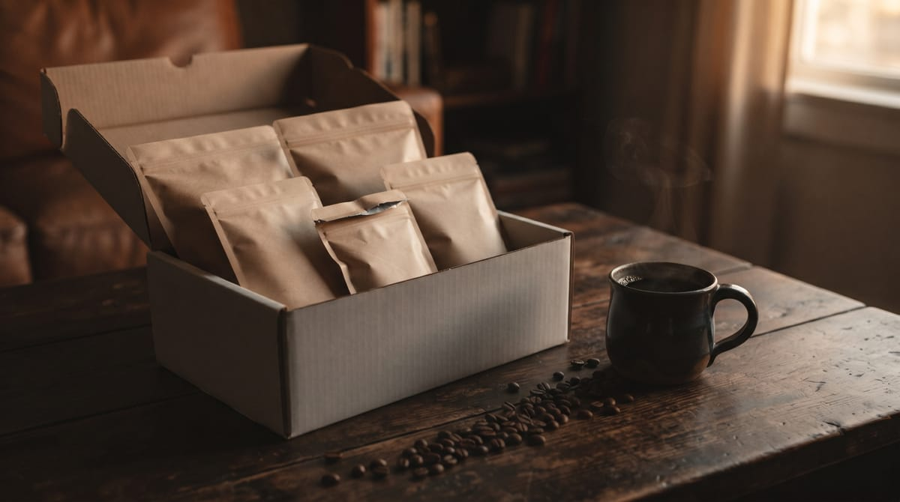

Specialty coffee · Roasted to order
Coffee with a story & a little attitude.
Seven legendary origins, roasted in small batches and at your door within 48 hours of leaving the drum.
- Origins
- 7
- Highest farm
- 2,200m
- Roast to door
- 48h

Our philosophy
We don’t blend away the story. Every bag is one farm , one harvest and one roast , profiled for exactly what that place tastes like.
01 — From seed to sip
Three steps. No shortcuts.
-
01
Picked ripe
We buy directly from farms that hand-pick only the reddest cherries — the ones with the most sugar.
-
02
Roasted small
Fifteen-kilo batches on a vintage drum roaster, profiled for each origin rather than one-size-fits-all.
-

03Shipped fresh
Bagged the same day and on its way within 48 hours, so it peaks in your cup instead of on a shelf.
02 — Origins
Where the world’s finest beans grow
Coffee only thrives in the “bean belt” between the tropics, where altitude, rainfall and volcanic soil shape every cup.
-

0119.6°N 155.9°W Kona
Macadamia · Brown sugar · Milk chocolate
-

0218.1°N 76.6°W Blue Mountain
Floral · Sweet cream · Mild
-
032.5°N 75.5°W Huila
Red apple · Caramel · Citrus
-

0421.5°S 45.4°W Sul de Minas
Milk chocolate · Hazelnut · Low acidity
-

056.2°N 38.2°E Yirgacheffe
Jasmine · Bergamot · Lemon
-

060.4°S 36.9°E Nyeri
Blackcurrant · Grapefruit · Brown sugar
-

074.6°N 96.8°E Gayo
Dark chocolate · Cedar · Earthy spice
-
Can’t choose?
Try all seven in our Origins Flight.
Get the flight
03 — Roast guide
Find your perfect roast
Pick a roast to see it on the table.

-
~201°C · just after first crack
Bright, floral and tea-like. The origin speaks loudest.
Best for pour-over
-
~213°C
Balanced and sweet — caramelised sugars meet natural acidity.
Best for filter & AeroPress
-
~225°C · second crack
Fuller body, chocolate and toasted nuts, softer acidity.
Best for espresso
-
~238°C
Smoky, bittersweet and heavy. Stands up to milk.
Best for moka pot & lattes

Join the club
Your next cup is waiting.
A new single origin every month, roasted the week it ships — plus brew guides from our roasters.